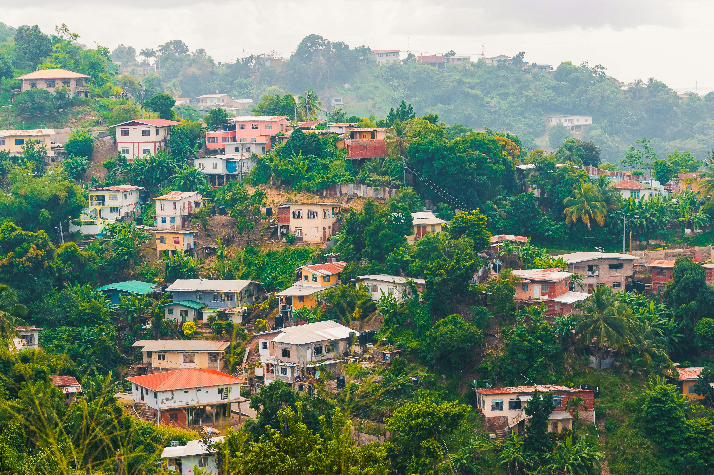
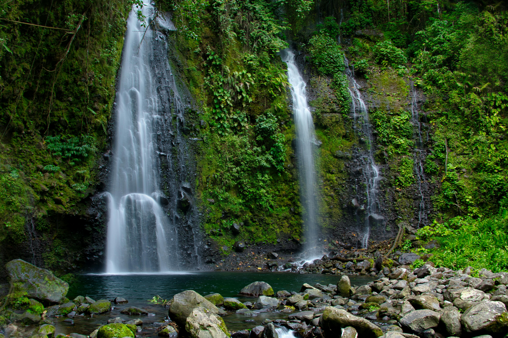
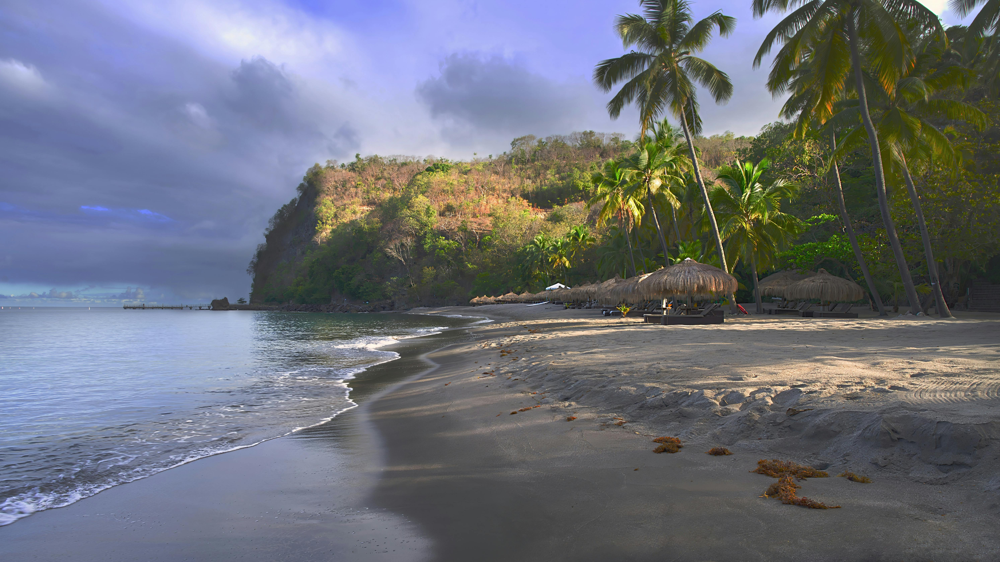
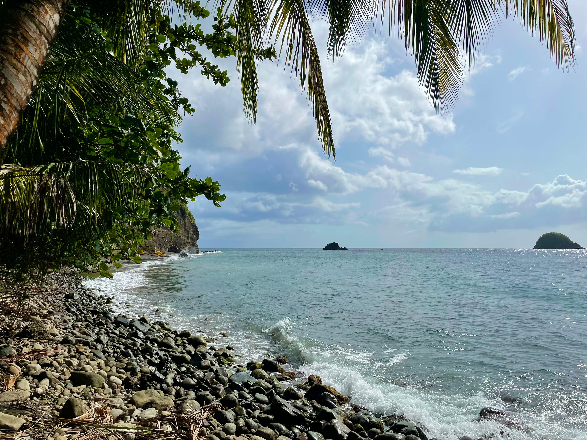

Back when Nicola was living in Martinique, we decided to take the ferry across to Dominica for a few days and rent a car to explore the island ourselves. Dominica felt completely different from many of the other Caribbean islands — greener, wilder, less polished and far less touristy. We remember driving along winding mountain roads surrounded by rainforest, with dramatic sea views, tiny villages, roadside fruit stalls and the feeling that the island was still wonderfully untouched.




Because Nicola was living in Martinique at the time, Dominica was close enough to reach by ferry, but it felt like stepping into a completely different world. Martinique had its French Caribbean rhythm, its towns and beaches and familiar structure. Dominica felt wilder from the beginning — greener, less developed and much more rugged.
We rented a car and explored the island ourselves, which was absolutely the best way to experience it. The roads twisted through mountains and rainforest, with viewpoints appearing unexpectedly around bends, little villages tucked into valleys and fruit stalls at the roadside. It felt adventurous without being over-planned — the kind of trip where the driving becomes as memorable as the stops.
Looking back, it is one of those places we appreciate more and more. Dominica is not a Caribbean island built around big resort beaches. It is the Caribbean as nature: rainforest, waterfalls, volcanic rock, hot water, deep green mountains and dramatic sea edges. It felt authentic, untouched and slightly like stepping back in time compared with more developed Caribbean destinations.
Dominica is known as the Nature Island for a reason, and the waterfalls are a huge part of that. They do not feel like neatly packaged tourist stops — they feel hidden in the jungle, surrounded by dense green vegetation, damp air, rocks, birdsong and the constant sound of water.
Trafalgar Falls is one of Dominica's most famous natural sights, with two waterfalls known as the Mother and Father Falls. The setting is everything you want from Dominica — rainforest, rocks, spray, green mountains and the sense that the island is still being shaped by water and volcanoes.
Emerald Pool is one of those places that sounds like a travel brochure name until you see it: a waterfall dropping into a green pool surrounded by rainforest. It feels peaceful, shaded and very Dominican — less polished attraction, more natural little pocket of jungle.
One of the real highlights of the trip was Titou Gorge. This is the kind of place that makes Dominica feel properly adventurous — you swim through a narrow gorge between high rock walls, with cool water, filtered light and rainforest above, moving towards a hidden waterfall tucked inside the rock.
It is not a normal beach-day kind of experience. It feels more cinematic than that — like you have turned off the road, stepped into the jungle and found something secret. The swim through the gorge is short but memorable, and the enclosed rock walls make it feel dramatic in a way that ordinary waterfalls do not.
For us, Titou Gorge summed up what made Dominica different. This was not a resort island where every activity revolved around a beach bar. This was an island where the best memories came from water, rock, rainforest and that little bit of nervous excitement that comes with doing something properly new.
Scotts Head was another standout. At the southern tip of Dominica, it is famous for the point where the Atlantic Ocean and Caribbean Sea meet. The scenery is absolutely stunning — blue water, dramatic coastline, steep green slopes and that sense of being right at the edge of the island.
It is the kind of viewpoint that stays with you because it captures the geography of Dominica so clearly. This is not a flat, sandy island. It is steep, volcanic, green and surrounded by powerful water. Standing at Scotts Head, you understand why Dominica feels so different from many other Caribbean islands.
On one side, the Caribbean Sea. On the other, the Atlantic Ocean. Scotts Head gives you one of the most memorable coastal views on the island and is absolutely worth the drive.
Driving around Dominica was an experience in itself. The roads were winding, steep and often dramatic, cutting through rainforest and mountain scenery, past small villages, cliff edges and little roadside stops. Around every corner there seemed to be another view — ocean, jungle, river valley, village, mountain, banana plants, volcanic slopes.
Dominica is not an island where the driving fades into the background. The roads are part of the story. You have to take your time, watch the bends and enjoy the fact that the journey itself is constantly showing you the island.
We remember tiny villages, local houses, fruit stalls, quiet roads and little flashes of everyday island life. That was one of the things that made Dominica feel so authentic — it did not feel built purely for visitors.
Dominica felt greener, wilder and less touristy than many Caribbean islands — more rainforest and mountain road than resort strip.
Two dramatic waterfalls in a rainforest setting — one of the island's classic natural sights and a must for any first visit.
A beautiful jungle pool and waterfall that feels tucked away in the forest — peaceful, shaded and completely in keeping with the Nature Island nickname.
Swimming through a narrow gorge towards a hidden waterfall was one of the most memorable and adventurous parts of the trip.
The point where the Atlantic and Caribbean meet — dramatic, scenic and one of the most unforgettable coastal views on the island.
Winding roads, tiny villages, fruit stalls and views around every corner made the driving itself one of the best parts of the trip.
Dominica is brilliant for independent travellers, but guided tours are especially useful if you want waterfalls, rainforest, viewpoints and logistics handled for you. TourRadar has Dominica and Caribbean options that help you experience the island beyond the obvious stops.
Disclosure: This is an affiliate link. If you book through it we may earn a small commission at no extra cost to you.
Waterfalls, rainforest tours, gorge swims, island drives, whale watching and nature experiences — book your Dominica activities in advance.
Disclosure: If you book through this link we may earn a small commission at no extra cost to you.
Klook is handy for browsing Dominica activities, tours and island experiences — especially if you want to compare options before choosing your rainforest or waterfall day.
Disclosure: This is an affiliate link. If you book through it we may earn a small commission at no extra cost to you.
Common questions
What to pack for Dominica
Dominica is hot, humid, green and adventurous. Pack for waterfalls, rainforest walks, mountain drives, rocky paths, boat crossings and sudden tropical rain.
Essential for carrying water, sunscreen, insect repellent, phone, towel and bits for waterfall stops.
View on Amazon →You will want plenty of water for rainforest walks, mountain roads and hot island days.
View on Amazon →Useful for blisters, scratches, bites and little mishaps on uneven paths and waterfall walks.
View on Amazon →Even when it feels shaded and jungly, the Caribbean sun is strong — especially around viewpoints and the coast.
View on Amazon →Dominica is rainforest-heavy, so repellent is one of the most practical things you can pack.
View on Amazon →Waterfalls, rainforest paths and rocky viewpoints need more than flip-flops.
View on Amazon →Light, breathable and useful for evenings, ferry travel and keeping covered without overheating.
View on Amazon →Disclosure: These are Amazon affiliate links. If you buy through them we may earn a small commission at no extra cost to you.
Dominica sits between Martinique and Guadeloupe — perfect for island-hopping through the French and Eastern Caribbean.
French Caribbean life, beaches, rum, volcano views and the island we were living on before crossing to Dominica.
Read the Martinique guide →Another French Caribbean island escape with beaches, rainforest, food and road-trip potential.
Read the Guadeloupe guide →Pitons, rainforest, volcanic scenery and another lush Eastern Caribbean island with a big nature feel.
Read the Saint Lucia guide →Go for the rainforest, waterfalls, gorge swims, mountain roads, roadside fruit stalls and the feeling of seeing a Caribbean island that has not been smoothed into a resort. Dominica is wild, green and unforgettable.
Affiliate disclosure: if you book through our links we may earn a small commission at no cost to you. We only recommend experiences we would genuinely consider ourselves.